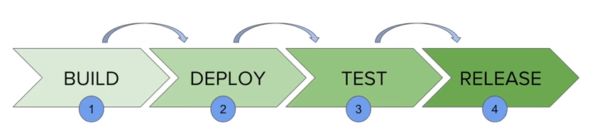

Index
Jenkins
What’s Jenkins?Jenkins is a automation tool. With him, you can create jobs to build, test and deploy your application. You can create your pipelines in jenkins.
But whats’s pipeline?
Pipeline is a script step by step of all things you need to do. Example: you will create a pipeline to build your code. First step is checkout your git code, after this you need test, build, package, create a docker image and finaly, deploy your code.
